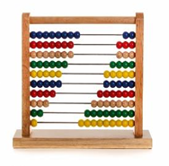

Computadora, es una máquina electrónica digital programable
que ejecuta una serie de comandos para procesar los datos de entrada,
obteniendo convenientemente información que posteriormente se envía
a las unidades de salida.
Computadora, es una máquina electrónica digital programable
que ejecuta una serie de comandos para procesar los datos de entrada,
obteniendo convenientemente información que posteriormente se envía
a las unidades de salida.
Computadora, es una máquina electrónica digital programable
que ejecuta una serie de comandos para procesar los datos de entrada,
obteniendo convenientemente información que posteriormente se envía
a las unidades de salida.
 Una computadora está compuesta por numerosos y diversos circuitos
integrados y varios elementos de apoyo, extensión y accesorios, que
en conjunto pueden ejecutar tareas diversas con suma rapidez y bajo el
control de un programa (software).
Una computadora está compuesta por numerosos y diversos circuitos
integrados y varios elementos de apoyo, extensión y accesorios, que
en conjunto pueden ejecutar tareas diversas con suma rapidez y bajo el
control de un programa (software).
La constituyen dos partes esenciales, el hardware, que es su estructura física (circuitos electrónicos, cables, gabinete, teclado, ratón, etc.), y el software, que es su parte intangible (programas, datos, información, documentación, etc).
| A través del tiempo | Eventos más trascendentales |
|---|---|
|
Abaco (5,000 años atrás)  |
Primera generacion (1945-1956)
|
Calculadora de pascal (1642)
|
Segunda generacion (1956-1963)
|
Máquina de multiplicar de Leibniz (1694)
|
Tercera generacion (1964-1971)
|
| Clases y Categorías de Computadoras | |
|---|---|
| Clases | Analógica |
| Digital | |
| De uso general | |
| De uso especial | |
| Categorías | Supercomputadora |
| Mainframe | |
| Minicomputadoras | |
| Servidor | |
| Microcomputadoras | |